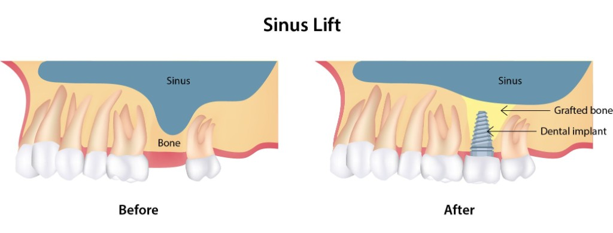

Back to treatments
Sinus lift
A sinus lift adds bone in the upper jaw beneath the maxillary sinus, where height has been lost after teeth were removed.
An implant can sometimes be placed at the same time. If not, it waits 6 to 9 months.

Starting priceFrom £400
Timeline6 to 9 months if the implant waits
AnaesthesiaLocal anaesthetic. Sedation is available.
What the treatment involves
- Planning Imaging and the graft material are agreed first.
- Lift The sinus membrane is raised through a small opening in the gum, and graft material is placed.
- Healing The graft is left to fuse with your bone over several months.
- Implant The implant is placed in the new bone, if it was not placed already.
Who it may suit
- It makes implants possible where the upper back jaw is too shallow.
- Local anaesthetic is used. Sedation is available.
- Complications such as sinus membrane tears are uncommon when the surgery is planned carefully.